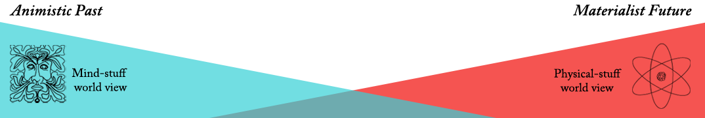

Mind Matter Spectrum
The Mind Matter spectrum is a way of bringing a particular narrative to human history. Being human has meant very different things over time. The ways we've chosen to answer the question "Is the mind separate from physical matter?" defines a clear progression.
Animism
Mind stuff is pervasive
Projection of psychological features onto everything, since there are few scientific ideas to make sense of the world.
- Aboriginal "dreamtime" Cosmogony
- Beliefs that plants, animals or places have human spirits
Implicit Dualism
Mind-stuff is pure and perfect, physical-stuff is secondary
Emergence of mathematics, deeper thought and complex mental models of the world convince physical stuff is not to be trusted.
- Plato's theory of forms asks us to look beyond physical-stuff to the true forms - mind-stuff
Cartesian Explicit Dualism
Mind-matter and physical are formally separately identified for the first time.
Descartes was the first philosopher to make dualism explicit. His view was that since we can imagine a mind without a body, and a body without a mind, they must be two separate things.
Psychological Dualism
Science and technology erode the uniqueness of mental-matter
Properties considered unique to mental-matter are shown not to be. Despite this, we still treat the two types of matter as separate in our everyday thought.
- Babbage and automata
- Turing and the Turing test
- fMRI scanning and free will
- Spell checking
Materialism
In the future, just as humans once accepted an animistic or rationalist view of the world, we will accept that the only thing that exists is physical-stuff.
- Dan Dennett's materialism
- Nick Bostrom and his transhumanism